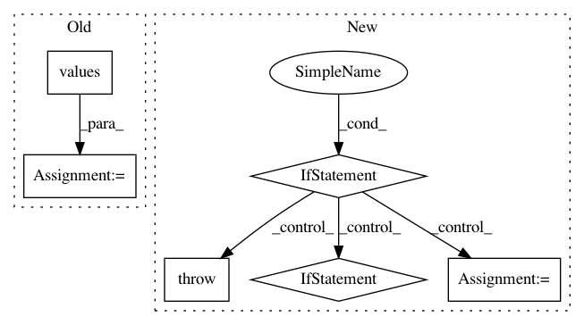

980fe014b6215730ac4fdfa451b067e6fb44e622,tensorforce/agents/dpg.py,DeterministicPolicyGradient,__init__,#DeterministicPolicyGradient#Any#Any#Any#Any#Any#Any#Any#Any#Any#Any#Any#Any#Any#Any#Any#Any#Any#Any#Any#Any#Any#Any#Any#Any#Any#Any#,129
Before Change
entropy_regularization=entropy_regularization, **kwargs
)
action_spec = next(iter(self.actions_spec.values()))
if len(self.actions_spec) > 1 or action_spec.type != "float" or \
(action_spec.shape != () and action_spec.shape != (1,)):
raise TensorforceError.value(
name="DeterministicPolicyGradient", argument="actions", value=actions,
After Change
// Config, saver, summarizer, recorder
config=None, saver=None, summarizer=None, recorder=None,
// Deprecated
estimate_terminal=None, critic_network=None, **kwargs
):
raise TensorforceError(message="Temporarily broken.")
if estimate_terminal is not None:
raise TensorforceError.deprecated(
name="DPG", argument="estimate_terminal", replacement="predict_terminal_values"
)
if critic_network is not None:
raise TensorforceError.deprecated(
name="DPG", argument="critic_network", replacement="critic"
)
self.spec = OrderedDict(
agent="dpg",
states=states, actions=actions, memory=memory, batch_size=batch_size,
max_episode_timesteps=max_episode_timesteps,
network=network, use_beta_distribution=use_beta_distribution,
update_frequency=update_frequency, start_updating=start_updating,
learning_rate=learning_rate,
horizon=horizon, discount=discount, predict_terminal_values=predict_terminal_values,
critic=critic, critic_optimizer=critic_optimizer,
preprocessing=preprocessing,
exploration=exploration, variable_noise=variable_noise,
l2_regularization=l2_regularization, entropy_regularization=entropy_regularization,
parallel_interactions=parallel_interactions,
config=config, saver=saver, summarizer=summarizer, recorder=recorder
)
policy = dict(
type="parametrized_distributions", network=network, temperature=0.0,
use_beta_distribution=use_beta_distribution
)
memory = dict(type="replay", capacity=memory)
update = dict(unit="timesteps", batch_size=batch_size)
if update_frequency != "batch_size":
update["frequency"] = update_frequency
if start_updating is not None:
update["start"] = start_updating
optimizer = dict(type="adam", learning_rate=learning_rate)
objective = "deterministic_policy_gradient"
reward_estimation = dict(
horizon=horizon, discount=discount, predict_horizon_values="late",
estimate_advantage=False, predict_action_values=True,
predict_terminal_values=predict_terminal_values
In pattern: SUPERPATTERN
Frequency: 3
Non-data size: 6
Instances
Project Name: reinforceio/tensorforce
Commit Name: 980fe014b6215730ac4fdfa451b067e6fb44e622
Time: 2020-08-13
Author: alexkuhnle@t-online.de
File Name: tensorforce/agents/dpg.py
Class Name: DeterministicPolicyGradient
Method Name: __init__
Project Name: pandas-dev/pandas
Commit Name: ebd9906e3b489387e500e3e31e53f159bae3cb9b
Time: 2020-10-06
Author: 45562402+rhshadrach@users.noreply.github.com
File Name: pandas/core/aggregation.py
Class Name:
Method Name: transform_dict_like
Project Name: GoogleCloudPlatform/PerfKitBenchmarker
Commit Name: 37bb2945cc38af48dfa5ad09392736c427008a80
Time: 2015-12-09
Author: connormccoy@google.com
File Name: perfkitbenchmarker/linux_benchmarks/redis_benchmark.py
Class Name:
Method Name: Run